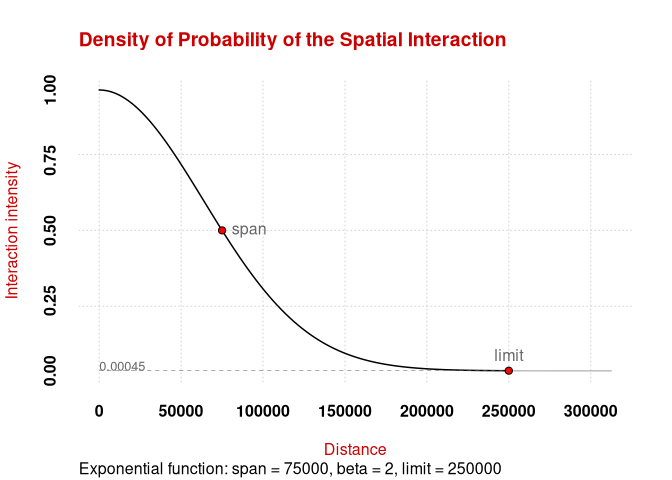
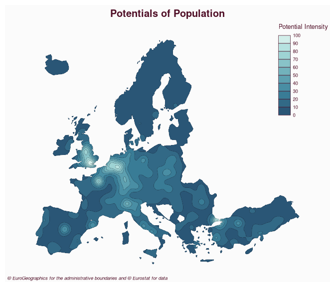

This package provides functions to compute the potential model as defined by Stewart (1941). Several options are available to customize the model, for example it is possible to fine-tune the distance friction functions or to use custom distance matrices. Some computations are parallelized to improve their efficiency.
Installation
You can install the released version of potential from CRAN with:
install.packages("potential")You can install the development version of potential from GitHub with:
# install.packages("remotes")
remotes::install_github("riatelab/potential")Demo
library(mapsf)
library(potential)
# Display the spatial interaction function
plot_inter(fun = "e", span = 75000, beta = 2, limit = 250000)
# create a regular grid
y <- create_grid(x = n3_poly, res = 20000)
# compute potentials
pot <- mcpotential(
x = n3_pt, y = y,
var = "POP19",
fun = "e", span = 75000,
beta = 2, limit = 250000,
ncl = 2
)
# Define potential according to the maximum value
y$pot <- pot / max(pot) * 100
# create equipotential areas
bks <- seq(0, 100, length.out = 11)
equipot <- equipotential(y, var = "pot", breaks = bks, mask = n3_poly)
# map potentials
mf_map(x = equipot, var = "min", type = "choro",
breaks = bks,
pal = hcl.colors(10, 'Teal'),
border = "#121725",
leg_val_rnd = 0,
lwd = .2,
leg_pos = "topright",
leg_title = "Potential Intensity")
mf_title(txt = "Potentials of Population")
mf_credits(txt = "© EuroGeographics for the administrative boundaries and © Eurostat for data")
Note
This package provides access to the revamped potential-related functions initially offered by SpatialPosition.
References
Stewart, John Q. 1941. “An Inverse Distance Variation for Certain Social Influences.” Science 93 (2404): 89–90. https://doi.org/10.1126/science.93.2404.89.